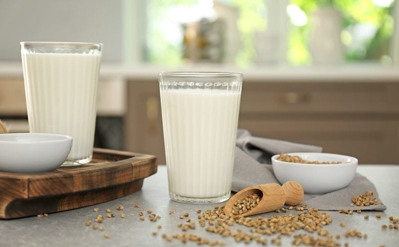

Hemp Seed Milk
I am sure that you have heard the saying, “Milk does a body good.” Well, hemp milk definitely does a body good! Hemp milk is a nutritional powerhouse, loaded with essential fatty acids, as well as all of the essential amino acids used to build protein in the body. It is rich in vitamins, minerals, healthy plant-based fats, antioxidants, fiber, and live enzymes. Shoot, just one single serving of hemp seeds contains 11 grams of protein. Not so shabby if you ask me. Have I enticed you to try a tall, cold glass of hemp milk yet? If not, let me see if I can further convince you.

Hemp milk can be a bit stronger in flavor than other nut or seed milk. It has an earthy-nutty flavor, but if you find it a bit strong, don’t write it off. Add a little sweetener and perhaps some vanilla. There are so many wonderful ways to dress it up or down. This quick and easy recipe for a raw food hemp milk made from hemp seeds can be used over a bowl of fruit, in smoothies and shakes, or enjoyed on its own.
Many of us are used to almond, cashew, coconut, soy, rice, oat, pumpkin seed, sunflower seed, sacha inchi, flax, and hazelnut milk. Why not add hemp milk to the mix? Every milk has a different personality (nutrients, flavor, texture)… all depending on the source of the milk. Add this one to the rotation and see what you think. There are two types of hemp seeds that can be used. Let me briefly share how you can use either one to make hemp milk.
Hemp Hearts
Hemp hearts are also known as hulled hemp seeds, shelled hemp seeds, and hemp nuts. With hemp hearts, you can skip the whole straining process, so you can use whole milk to maximize nutrition. If you want the mouth-feel of commercial-style milk, go ahead and strain the milk through a nut bag before chilling.
Unshelled Hemp Seeds
Why use whole, unshelled hemp seeds? When you use the unshelled hemp seed, you gain extra minerals but more importantly, a rare source of insoluble fiber, something that we get very little of in our modern diets. They are also easier on the pocketbook since they tend to be a lot cheaper than hemp hearts. Although the whole seeds have a hard shell, it will make a rich and creamy milk once you blend and strain the mixture.
So there you have it in a hemp-seed-shell… go ahead and gather up the ingredients and enjoy a tall, cold glass of hemp milk. I would love to hear about your experience so please comment below. Have a blessed and happy day, amie sue
 Ingredients:
Ingredients:
- 3 cups water
- 1 cup hemp seeds (hulled or unhulled)
- 1 spoon sunflower seed butter
- 1/2 tsp vanilla extract
- 1 Tbsp sunflower lecithin
- 1 Tbsp sweetener
- Pinch pink Himalayan salt
Preparation:
Hemp Hearts (hulled = no shells)
- In a high-speed blender, combine the water, hemp hearts, sunflower butter, vanilla, lecithin, sweetener, and salt. Blend until the hemp hearts are completely broken down.
- There is no need to strain the milk when using hemp hearts.
- Chill and enjoy within 3-4 days. You will spot some sediment in the bottom of the container, shake or stir before pouring in a glass or cereal bowl.
Hemp Seeds (unhulled = have shells)
- In a high-speed blender, combine the water, hemp hearts, sunflower butter, lecithin, sweetener, vanilla, and salt. Blend until the hemp hearts are completely broken down.
- Carefully strain the mixture through a nut-milk bag and discard the pulp.
- Chill and enjoy within 3-4 days. You will spot some sediment in the bottom of the container, shake or stir before pouring in a glass or cereal bowl.
Other nut/seed milk-making tips
Straining the milk:
- Turn the bag inside out and keep seams on the outside for easier straining, cleaning, and faster drying.
- Place the nut milk bag in the center of a large bowl.
- Instead of a nut bag, you can drape cheesecloth over the edges of the bowl and pour the milk through it. I find this process messier, and it doesn’t seem to filter it as well.
- Desperate? Don’t have a nut bag or cheesecloth while you are vacationing in France? Take off one of those silky, French knee-high nylons, wash it and pour the milk through it. I am here, always thinking of you. :)
- With one hand holding the nut bag, pour the milk into the bag. Lift the bag, and the milk will start to flow through the mesh holes in the bag. The finer the mesh, the more filtered the milk will be.
- Gather the nut bag (or cheesecloth) around the almond meal and twist close.
- Squeeze the seed pulp with your hand to extract as much milk as possible.
- Do not toss the seed pulp. Freeze and dehydrate it, which can be used in other recipes such as smoothies, crusts, cookies, crackers, cakes, or raw breads.
Flavoring:
- Liquid sweeteners: you can sweeten seed milk with the sweetener of your choice. Start with 1 tsp and build up. For a sugar-free option, use NuNaturals liquid stevia.
- Dried fruit: Medjool dates add a wonderful caramel-like flavor to seed kinds of milk. You might also want to run it back through to the nut bag to filter any small bits out. You can use all sorts of fresh or dried fruits for this.
- Spices: To liven things up, add cinnamon, cloves, cardamom, pumpkin spice… you name it.
- Extracts: vanilla, or any other flavoring.
- Raw cacao powder.
Thickeners and Emulsifiers:
- Lecithin
- Add up to 1 Tbsp per 2-3 cups of water used.
- I highly recommend powdered sunflower lecithin, but soy can be used if you use it.
- Coconut butter/manna
- Add up to 1 Tbsp per 2-3 cups of water used.
- Do not use coconut oil. It hardens when chilled and may create small, gritty pieces in the milk.
- Nut butter
- Add up to 1 Tbsp per 2-3 cups of water used.
- If using store-bought, watch for added ingredients such as salt.
Storing and expiration:
- Store the milk in an airtight glass container such as a mason jar.
- Always label the contents and the date that it was made.
- If for some reason separation still does occur, just shake the jar before serving, and the milk will come back together.
- Fridge – The milk can last anywhere from 3-5 days in the fridge.
- If the seed milk prematurely sours it may be from the unclean blender, nut milk bag, or poor quality seed.
- Freezer – There are several ways to store seed milks in the freezer, and you can freeze for up to 3 months.
- Pour the milk into ice cube trays and freeze. This is great for plopping into smoothies.
- Freeze in 1.5-pint freezer-safe jars.
- It is important that you only freeze glass jars that are made for freezing. I have tested this, and sure enough, I have had jars crack on me, which resulted in throwing everything in the trash. Sad day.
- You can use smaller jars for better portion control if you don’t plan on using a full 1.5 pints worth.
- Pay attention to the “maximum freeze line” indicated on the jar. If you don’t see that, then it’s another indicator that the jar isn’t safe to place in the freezer.
Nut bag maintenance:
- It is important to keep the nut milk bag clean!
- Wash with organic, scent-free soap, such Dr. Bronners. Do not use laundry soap. (always refer to the manufacturers cleaning method as well)
- Rinse well and air dry. Ideally in the direct sun to receive free sterilizing from the warm rays. Nylon nut milk bags should not be placed in the sun as the ultraviolet rays can damage the nylon.
- Do not hang the bags outside on the clothesline to dry. We don’t want an air-raid of bird poop coming down on it.
- Proper bag storage
- I like to roll mine up and store them in a glass jar. This will help keep it clean, protect it from dust, and also prevent accidental hole damage. A holy bag has no purpose when it comes to nut milk making.
- Also, if you use nut bags for multiple reasons, it would be a good idea to store them in separate jars, labeling them for their purpose, such as; nut milks, juicing, sprouting.
© AmieSue.com